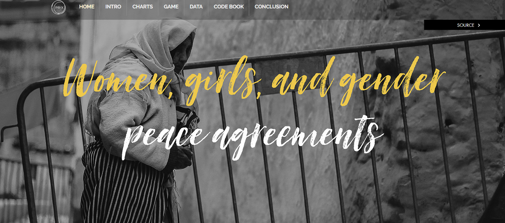
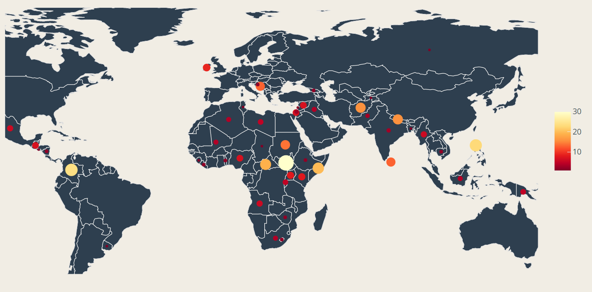
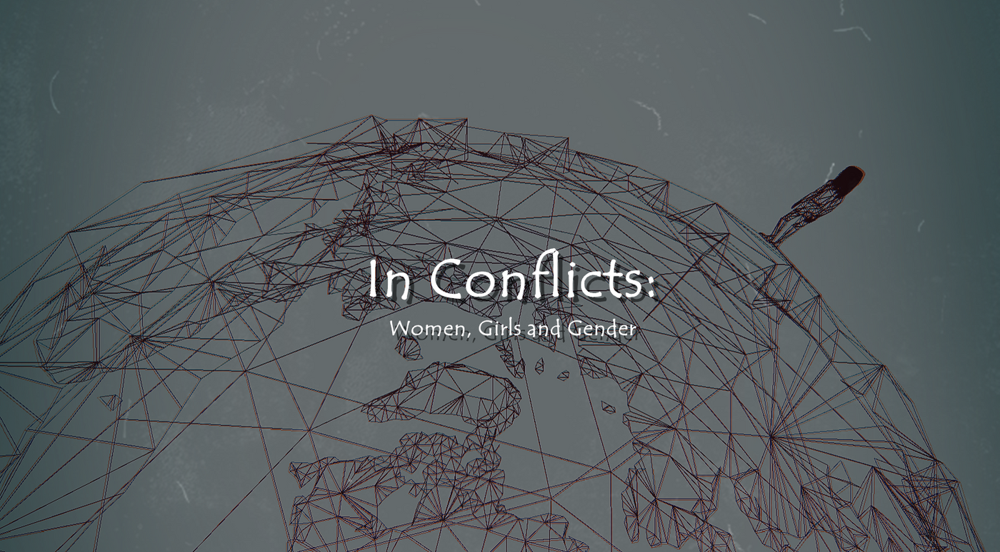

2021 / Info vis
[Info Vis] Women and Peace Glimpsed from "Data"

This is a Data Visualization virtual platform based on the "PA-X Women, Girls, and Gender" dataset. The aim of this project is to explore the potential relationship between women, girls, gender and peace agreement in the period between 1990 and 2020 throughout the world with computational methods. We try to engage the self-motivation of the audience to understand the contents of the gender aspects of the peace agreement data set more intuitively through different forms of visual presentation.
You can access our platform via: https://xujiangnan.wixsite.com/ds4dwgg.

Contribution: The data analysis is constructed by all our group members (Jiangnan Xu, Wenbei Sun, Yanan Liu, Xiao Xue, Xu Zhang). I took the responsibility as the indie game designer and developer to create the narrative mini-game attached in the platform, The game "In Conflicts: Women, Girls and Gender" was made to conduct a game-based experience for improving the perceiving of the data visualization. I drafted the game play and finished the 3D modeling and programming. Then I designed the graphic posters and streamed the game on Unity's online gaming platform for further presentation.
